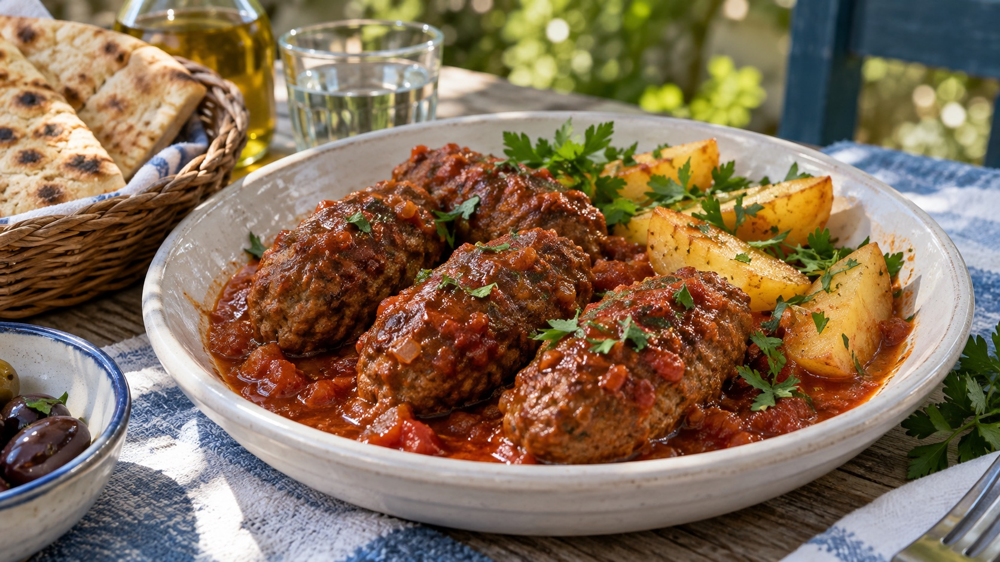
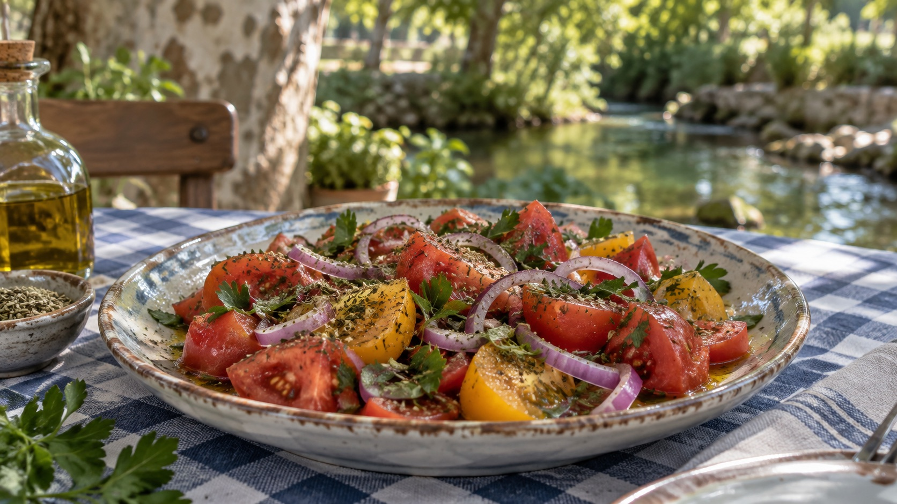
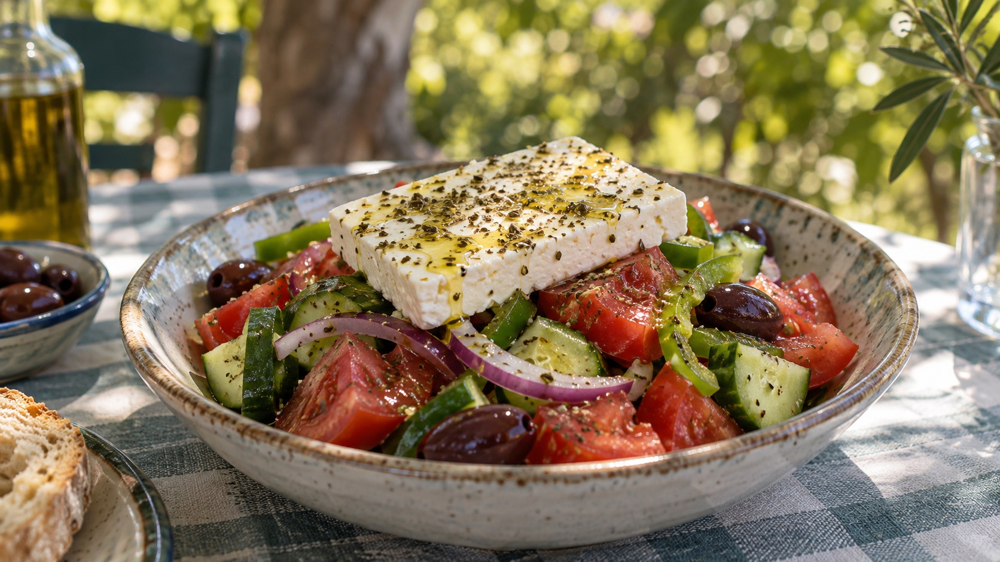

01 / 03
Δύο χιλιόμετρα. Άλλος κόσμος.
Ο Άγιος Ιωάννης βρίσκεται μόλις δύο χιλιόμετρα από την πόλη των Σερρών. Κάτω από τα αιωνόβια πλατάνια, το τρεχούμενο νερό γίνεται η πρώτη πρόσκληση για μια στάση.
 TAVERNA AGIOS IOANNIS · SERRES
TAVERNA AGIOS IOANNIS · SERRES

ΑΓΙΟΣ ΙΩΑΝΝΗΣ · ΣΕΡΡΕΣ
Σουβλάκι στα κάρβουνα, δροσιά κάτω από τα πλατάνια και μια παρέα που δεν βιάζεται να φύγει.
Γνωρίστε τον τόπο
ΣΗΜΕΙΩΣΕΙΣ ΑΠΟ ΤΟΝ ΑΓΙΟ ΙΩΑΝΝΗ
Μόλις δύο χιλιόμετρα από τις Σέρρες, το νερό, τα πλατάνια και οι μικροί καταρράκτες αλλάζουν την αίσθηση του χρόνου.
Ο Άγιος Ιωάννης βρίσκεται μόλις δύο χιλιόμετρα από την πόλη των Σερρών. Κάτω από τα αιωνόβια πλατάνια, το τρεχούμενο νερό γίνεται η πρώτη πρόσκληση για μια στάση.

Τα άφθονα νερά σχηματίζουν σε πολλά σημεία μικρούς καταρράκτες και λιμνούλες. Ο δήμος καταγράφει επίσης πηγές κοντά στο παρεκκλήσι του Αγίου Γεωργίου.

Λιμνούλες, πάπιες, πλατάνια και τραπέζια στη σκιά κάνουν τον Αη Γιάννη αγαπημένη απόδραση. Το 2017, ο δήμος γιόρτασε εδώ το νερό με μια τοπική γιορτή.
Η ομορφιά τους βρίσκεται στην κλίμακα: πολλά χαμηλά περάσματα νερού μέσα σε έναν πράσινο χώρο δίπλα στην πόλη. Οι διαθέσιμες δημοτικές πηγές περιγράφουν το νερό και τις πηγές, δεν τεκμηριώνουν όμως πότε διαμορφώθηκε κάθε μικρή βαθμίδα.
ΑΠΟ ΤΗ ΣΧΑΡΑ
Σουβλάκια πάνω στα κάρβουνα, λεμόνι και ζεστό ψωμί στη μέση. Η πιο ωραία αρχή είναι αυτή που μοιράζεται.
01 / FIRE
Μια ελληνική ταβέρνα είναι τα πιάτα στη μέση, οι φωνές γύρω από το τραπέζι και η τελευταία μπουκιά που κανείς δεν θέλει να πάρει.



Δροσερό, ζεστό, αλμυρό, γλυκό. Πατήστε ένα πιάτο και αφήστε την εικόνα να μιλήσει.

Οι εικόνες είναι εικαστικές προτάσεις. Τα πραγματικά πιάτα και η κάρτα θα επιβεβαιωθούν από την ταβέρνα.
Είκοσι τέσσερις κινηματογραφικές στιγμές από τον τόπο, την κουζίνα και το τραπέζι.
01 / 24Οι εικόνες είναι δημιουργημένες εικαστικές προσεγγίσεις και δεν απεικονίζουν πιστά τον πραγματικό χώρο ή τα πιάτα.
Στον Άγιο Ιωάννη Σερρών, ανάμεσα στη φωτιά και το νερό. Ελάτε να μοιραστούμε μια όμορφη στιγμή.
Δείτε την περιοχήΗ ακριβής διεύθυνση, το τηλέφωνο και οι ώρες λειτουργίας θα προστεθούν σύντομα.